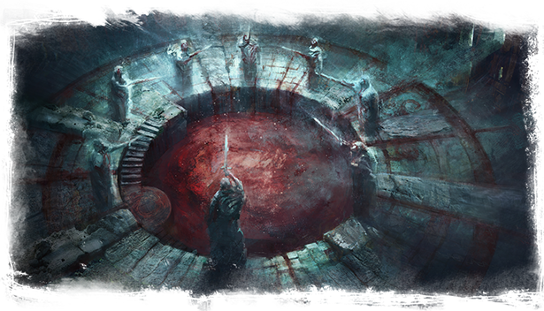

L'Éclipse Cramoisie
Organisation :
Un gourou qui prétend être envoyé du Néant.
Dirigeant :
Chaque gourou donne sa place après un certain temps, élisant par son unique voix un nouvel élu.
Nombres de membres :
Un huitième de la population de Doème.
Mots d'ordre :
L'objectif est d'invoquer des créatures provenant des Miasmes à Guénazar pour faire s'étendre l'emprise de Ga'ar.
Recrutement :
Pour recruter, les apôtres se servent des émotions néfastes des citoyens les plus pauvres, leur assurant le salut dans le culte.
Lieu de rassemblement :
De vieux temples, au plus profond de Doème, où ont lieux les sacrifices et autres dogmes sombres.
Dans les profondeurs de Guénazar s’affrontent les gangs et les cultes sombres. Parmi ces derniers, les adeptes de l'Éclipse Cramoisie font preuve d’une violence virulente. Le manque de clarté dans la ville basse, ainsi que les tourments qu’infligent l’Inquisition à ses habitants, établirent un climat propice aux sectes. Notamment dirigées vers Ga’ar et les voies sombres des Tertres-du-Temps.
Le culte reprend les grandes idées de la croyance envers le Néant et y ajoute son arôme, marqué par des stigmates de mutilation sur le corps des fidèles et l’attente d’une éclipse dévorant le ciel.
N’hésitant pas à sacrifier des innocents au nom de Ga’ar, ils terrifient ceux qui cherchent à survivre dans la débauche de la capitale humaine. Pourtant, certaines mères en manque d'argent et ne pouvant nourrir leurs nourrissons les confient à l'Éclipse Cramoisie. Certains deviennent alors des membres importants du groupe, grandissant baignés dans ses idéaux, les autres sont sacrifiés et saignés sans scrupules pour des idées fantasques.
La secte n'est pas particulièrement bien vue par la mafia de Doème, ils sont redoutés et évités comme la peste. Des tueries régulières viennent opposer les deux partis, leurs objectifs étant diamétralement opposés. Si le culte cherche à invoquer le Mal et à faire sombrer Sufle dans la noirceur de Doème, les malfrats cherchent à briser le système et prendre le contrôle de la ville haute. Il est évident que leurs deux appréhensions du conflit humain ne sont pas compatibles.
Soyez prudents, nul ne sait ce qui rôde dans les quartiers des pentacles, ni ce dont les fidèles sont réellement capables. À moins que vous ne vouliez les joindre ?